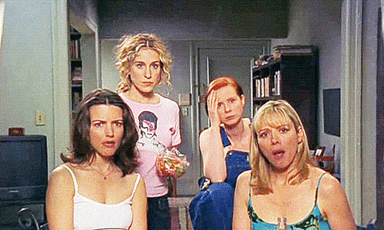
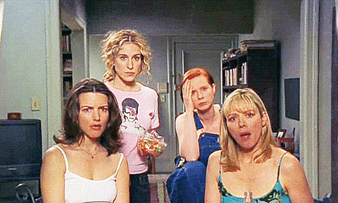
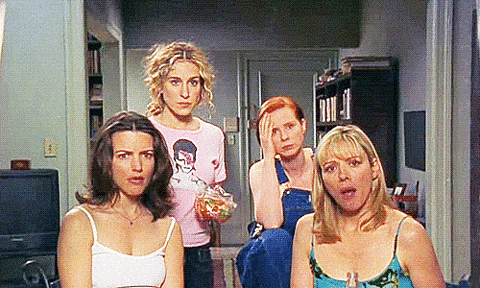

From glitz to glory: when does the manicure become art? (VICE)
Ook voor vrouwen geldt: als je moet, dan moet je. Op de kermis van Blaricum bieden vrouwenurinoirs uitkomst (de Volkskrant)
De Amerikaanse rapper Doechii is de artiest geworden waar ze tien jaar geleden op YouTube van droomde (de Volkskrant)
Is het mode? Is het wapentuig? Mysterieus fotoarchief van het Amerikaanse leger nu te zien in Rotterdamse Kunsthal (de Volkskrant)
Van lakjes van AliExpress tot een kaassouffle: wat zijn nu eigenlijk de risico's van nepnagels? (RedPers)
Reality-tv achter de schermen: eerlijk of gespeeld? (RedPers)
